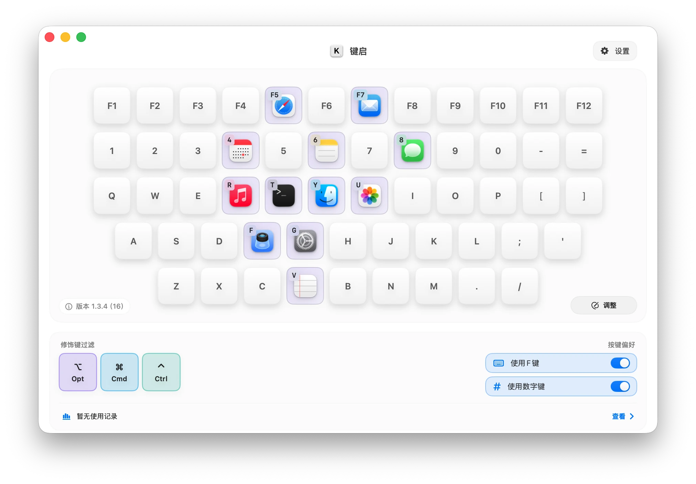
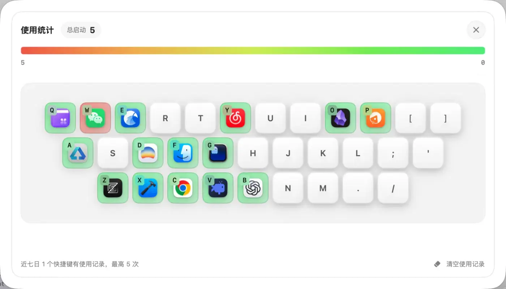

把常用 App，
放到键盘上。
在一张清晰的键盘上安排你的 App。按下熟悉的按键，立即启动、切换或隐藏，不打断当前思路。

修饰键，让布局更自由
在主界面直接筛选 Option、Command、Control 和 Shift。为同一个按键设置多组组合，按照你的肌肉记忆组织 App。
启动、切换，也能隐藏
App 未打开时启动，已打开时带到前台，已经在前台时再次按下即可隐藏。
- 未打开时，启动
- 已打开时，带到前台
- 已在前台时，隐藏
近 7 日 Top 10
统计真实启动次数，用两列榜单展示最常用的 10 个快捷键。数据只保存在本机。

提前发现快捷键冲突
设置时检查已有绑定和系统快捷键，避免保存之后才发现按键没有反应。
在菜单栏随时暂停
演示、游戏或临时输入时，一次暂停全部热键，需要时再恢复。
使用 Homebrew Cask 安装
习惯使用终端管理应用？你可以通过 Lanrenwen Studio Homebrew Tap 一键安装与更新 KeyLaunch。
Terminal
$
brew install --cask LanrenwenStudio/apps/key-launch
新版本发布后，随时运行 brew upgrade --cask key-launch 即可更新到最新版。
支持 macOS 13 及以上版本 · 8 种语言 · 数据只保存在本机